você disse isso na call de 18 de novembro. nos planos de saúde, os exames já são 68% dos procedimentos e só 18% do gasto. quem tem plano faz exame de sobra, mas quase nunca tem alguém que olhe os resultados junto com ele.
IESS, “saúde suplementar em movimento”, julho de 2026, com dados de 2025.
Weird Fishes AtelierNovembro, 2026
na call, você pediu ajuda pra fazer a longi crescer sem recriar a marca que ela já tem.
“não é recriar a marca.”você, na call de 18 de novembro
a marca
limpar o brand book, mantendo o que você gosta e tirando o que te incomoda.
o instagram
fazer conteúdo e growth pensando como startup, em vez de pagar influenciador no chute.
os assets
ter vídeos de produto, mockups e fotos de gente usando a longi sem precisar marcar ensaio.
a embalagem
aplicar a marca limpa no kit que chega na casa da pessoa.
o site
reescrever o copy pra vender o resultado, com o sistema de saúde no papel de vilão.
a rodada
chegar no fim de janeiro com os visuais prontos e números de crescimento pra mostrar.
você também quer alguém pensando growth junto até contratar uma pessoa full-time.
Weird Fishes AtelierNovembro, 2026
o diagnóstico é que a longi já tem boas peças, e o que falta é uma regra que junte todas elas.
pra chegar nisso, a gente olhou o site, os 12 últimos posts do @longi.br e a transcrição da nossa call de 18 de novembro.
Weird Fishes AtelierNovembro, 2026
as cores continuam as mesmas, e uma cor quente não vai mais em cima de outra do mesmo tom.
creme#F8F6F2
branco#FFFFFF
vinho#4F0D0D
noite#390A0E
terra#792501
vermelho#A4343A
ouro#FFC680
tinta#272321
Longivinho no creme
Longivermelho no branco
Longiouro no vinho
Longicreme no terra
Longibranco na foto
Longilaranja no laranja
Longipêssego no pêssego
continua valendo: texto claro em fundo escuro e texto escuro em fundo claro
deixa de valer, como no instagram de hoje
“uma coisa que eu odeio é tipo essa cor em cima dessa cor.” você, na call. as cores aqui são as que o código do seu site já usa. no brand book, elas viram uma regra só, que qualquer fornecedor consegue seguir sem te perguntar.
Weird Fishes AtelierNovembro, 2026
os últimos 12 posts já têm bons assuntos e boas fotos, e falta só uma regra visual em comum.
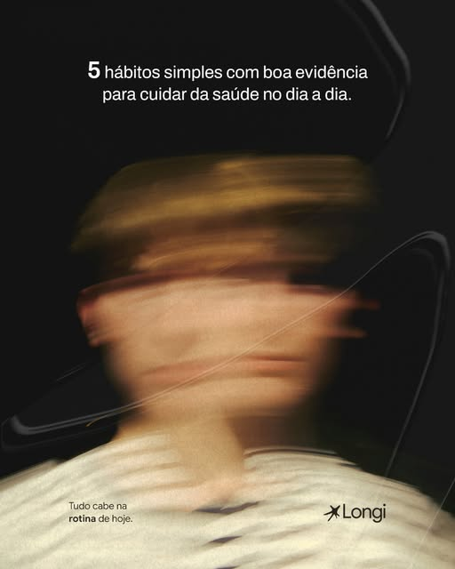
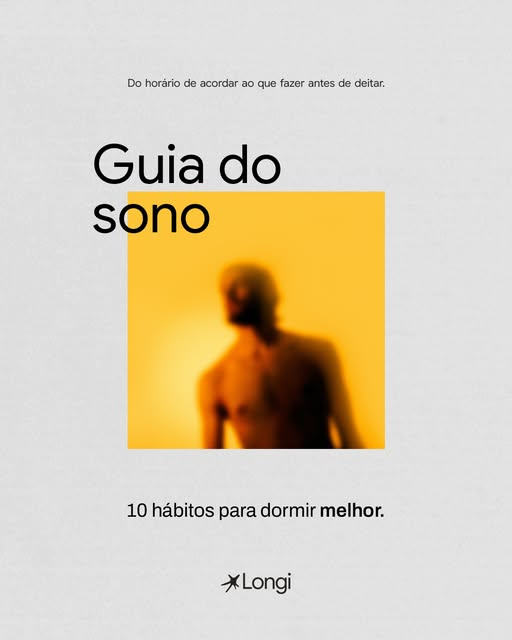
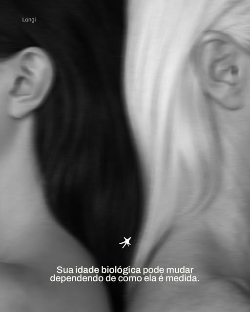
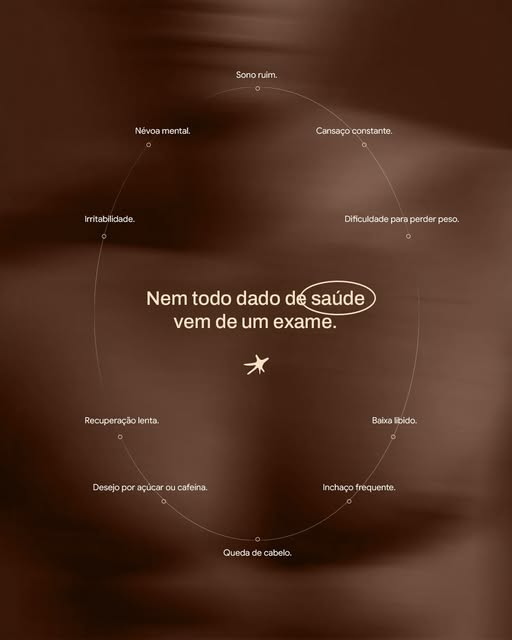
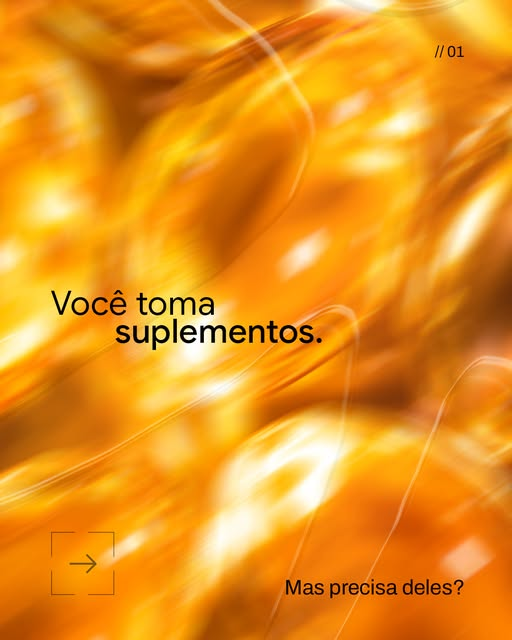
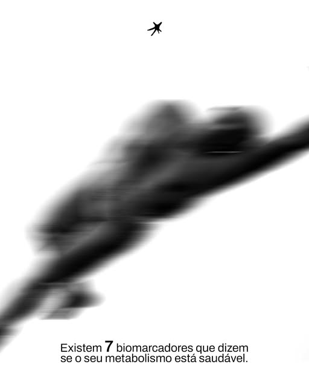
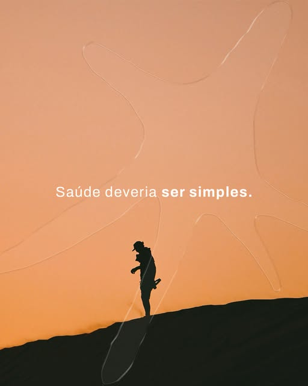
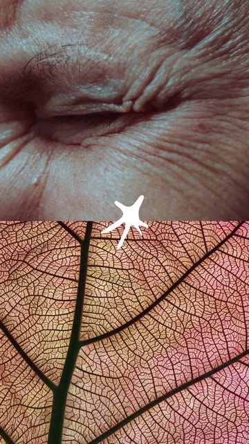
o fundohoje varia entre degradê laranja, foto em preto e branco, cinza, branco, marrom e dourado.
o títuloaparece em cima, no meio ou embaixo, em tamanhos e caixas diferentes.
o símboloaparece preto, branco ou laranja, às vezes sozinho e às vezes ao lado do nome.
o melhor exemplo é o post de setembro sobre a perimenopausa, que fala direto com as mulheres de 35+, o seu público. a ideia é manter assuntos como esse e colocar o fundo, o título e o símbolo numa regra só.
@longi.br no instagram, posts de 10 de setembro a 24 de outubro de 2026.
Weird Fishes AtelierNovembro, 2026
o site já explica bem o produto, e três ajustes deixam ele pronto pra rodada.
“o mais fácil do mundo”
a rythm, que você citou como referência, usa “world’s easiest blood test” como marca. quem conhece a rythm vai ler a frase da longi como cópia, então o brand book troca ela por uma que seja só da longi.
a dose na vitrine
a home mostra doses de ferro, magnésio e vitamina d, que saem do plano revisado pelo médico. fora do app, elas podem soar como prescrição, e pela resolução 2.336/2023 do cfm o diretor médico responde por toda a publicidade.
a cara de template
na call você disse que o site estava “muito AI”. a impressão vem dos cards arredondados, dos rótulos em fonte mono e dos passos numerados de 01 a 05, que o brand book troca por elementos da própria longi.
Weird Fishes AtelierNovembro, 2026
a resposta é manter a marca que você já tem e fazer ela aparecer do mesmo jeito em todo lugar.
como ninguém acorda querendo fazer um exame de sangue, a marca fala do que vem depois dele, como ter mais energia, dormir melhor e render no treino. o médico e o laboratório continuam à vista pra quem quiser conferir. em todas as peças, o exame aparece como assunto, porque é o que separa a longi de uma academia ou de um app de sono.
1no primeiro mês, a gente limpa a marca e desenha o kit
2toda semana saem posts, vídeos e assets que falam do exame
3os criadores levam a longi pra um nicho novo por mês
4pra rodada, os visuais ficam prontos até 15 de janeiro e os números de crescimento até o dia 26
Weird Fishes AtelierNovembro, 2026
a marca que você já tem, aplicada em cada peça, num primeiro esboço
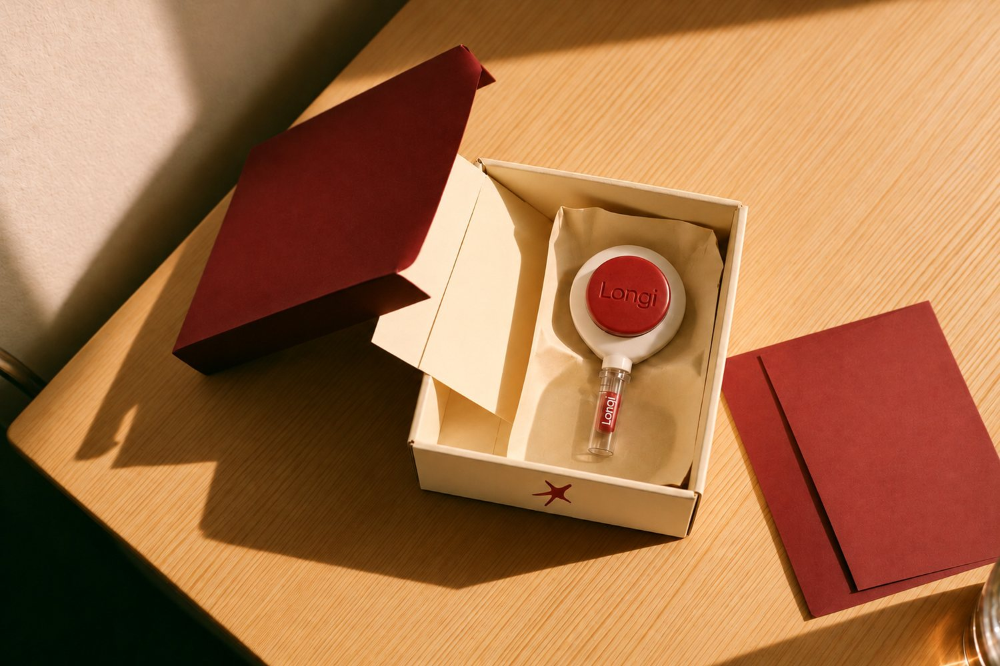
longi, 2027
Weird Fishes AtelierNovembro, 2026
em 2027, a longi tem a mesma cara no post, no kit e no whatsapp.
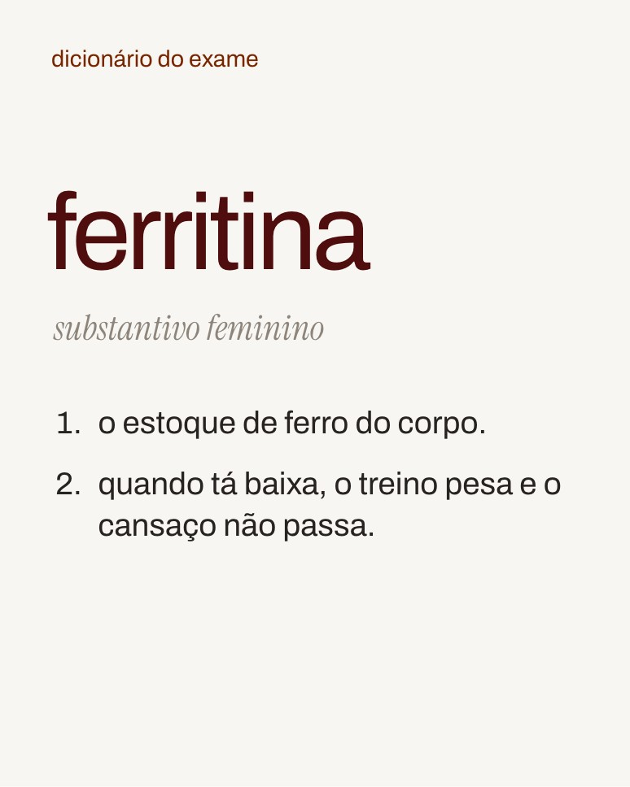
o posttoda semana sai uma palavra do dicionário do exame.
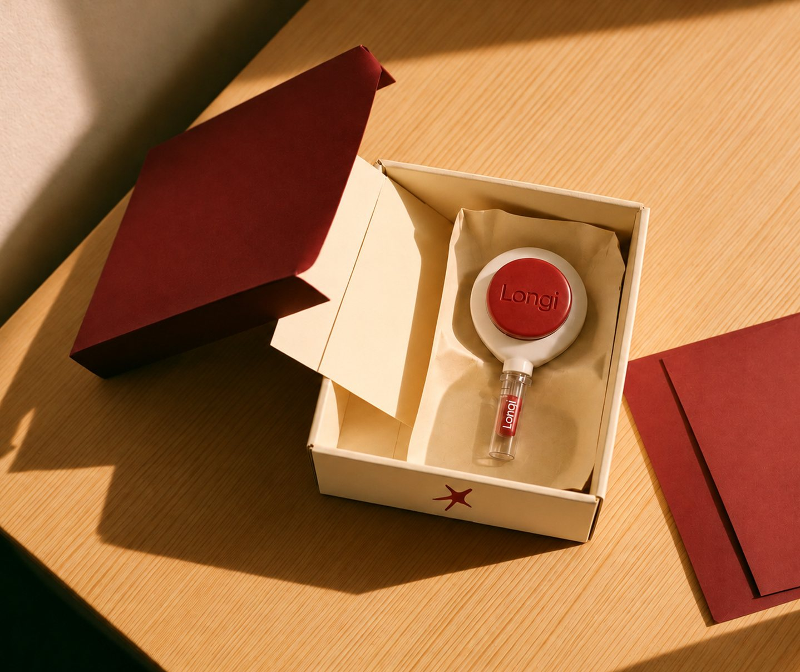
o kita caixa é creme com a tampa vinho, e o dispositivo vai dentro.
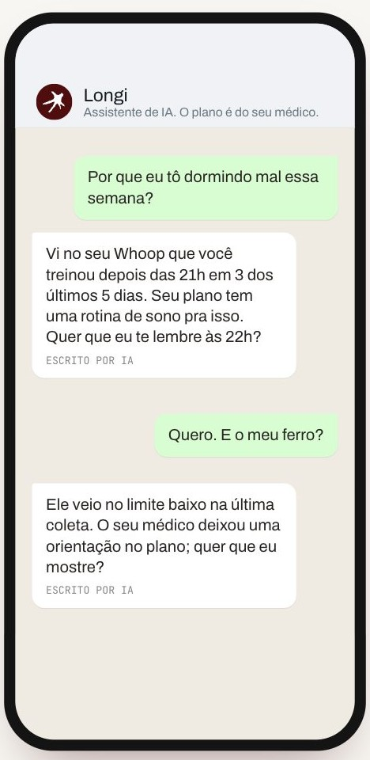
o whatsappo plano continua no whatsapp entre uma coleta e outra.
a gente ficou com a marca que você já tem e organizou o que estava solto em três regras.
a longi fala do que a pessoa quer, como mais energia e sono melhor, e o exame, o médico e o laboratório continuam ali pra quem quiser conferir.
todo post traz um marcador, um número ou um dos 4 dias entre a coleta e o resultado.
as cores, a fonte e a foto seguem o brand book em qualquer peça.
peças das próximas telas; textos e números são exemplos.
Weird Fishes AtelierNovembro, 2026
COR
A proporção
Creme
Vinho
Branco
Terra
Vermelho
Ouro
Texto claro no fundo escuro, texto escuro no fundo claro. Duas cores quentes do mesmo tom, uma em cima da outra, não entram.
LETRA
Archivo, com mono pros números
Aa
Seu resultado em 4 dias.TÍTULO 300
Colete em casa. O motoboy leva pro laboratório.TEXTO 400
FERRITINA 38 ng/mLDADO, MONO
aberta.UMA VEZ POR PEÇA
FOTO
Luz quente, gente no seu melhor
O dispositivo aparece sempre. Depoimento é sempre de gente de verdade.
VOZ E VIDRO
Seu resultado chegou. Vamos ver juntos o que mudou.
A Longi fala com a pessoa como quem conversa, sem prometer cura e sem assustar.
O vidro fica nos cards de resultado do app. Nos posts e no site, a foto aparece limpa.
VITAMINA D
34 ng/mL
Dentro da faixa. Próximo exame em março.
longi, 2027
o brand book
o brand book vira uma lista curta de regras que qualquer pessoa usa sem precisar te perguntar.
ele cobre cor, letra, foto e voz, mantém o que você curte e tira o que te incomoda.
a cor
as cores são as suas, agora com uma proporção definida.
o creme fica no fundo, o vinho é a cor da marca e o ouro aparece pouco. noite e tinta, que também estão no seu site, ficam pros textos e pros fundos mais escuros.
a letra
a fonte continua sendo a archivo, que já está no seu site, com uma mono pros números.
como o exame é feito de números, eles ganham uma fonte própria. o itálico com serifa, que o seu site já usa em “aberta.”, aparece no máximo uma vez por peça.
a foto
as fotos mostram gente no seu melhor, com luz quente e o dispositivo sempre à vista.
essas fotos saem do midjourney, e depois o gpt coloca o seu dispositivo no braço de cada pessoa. é assim que dá pra ter foto nova toda semana sem marcar ensaio.
a voz
a longi fala como alguém que acompanha a pessoa entre um exame e outro.
o vidro, que você curte, fica nos cards de resultado do app, como esse. nos posts e no site, a foto aparece limpa, que é como postam as marcas de saúde que mais engajam.
1 de 5
textos e números são exemplos.
Weird Fishes AtelierNovembro, 2026
dia 1: apertei o botão. foi isso.
dicionário do exame
ferritina
substantivo feminino
o estoque de ferro do corpo.
quando tá baixa, o treino pesa e o cansaço não passa.
o exame veio “normal”. normal comparado com quê?
achei que meu cansaço era só rotina. aí vi minha ferritina.
23:40●●● 5G ▮
‹L
Longionline
HOJE
posso treinar pesado com a ferritina baixa?23:40 ✓✓
Por enquanto, melhor não puxar no limite. Mandei seu resultado pro seu médico da Longi, ele te responde por aqui.Escrito por IA23:40
dia 2: o motoboy passou antes do almoço.
a perimenopausa pode começar enquanto você ainda menstrua.
comenta “exame” que a gente manda kits pra testar.
fiz o exame antes do pilates. o resultado veio no whatsapp.
longi, 2027
o instagram
o perfil passa a parecer o de quem usa a longi, com vídeo de celular, texto puro e print de verdade.
a gente olhou os últimos posts de 19 marcas de saúde. o que mais engaja é o dispositivo num braço de verdade, como na rythm, e criador postando em collab, como na beep. foto de estúdio e card de vidro são o que menos engaja.
4 dias
a série dos 4 dias vira reel de celular, com uma legenda só.
cada pessoa filma o próprio dia no banheiro, na portaria ou no sofá, do jeito que a rythm faz com o mesmo tipo de dispositivo. o resto da história vai na legenda do post.
o dicionário
toda semana sai uma palavra do dicionário do exame, feita pra pessoa salvar.
o formato vem do sallvecionário, da sallve: a palavra, a classe e duas linhas que explicam. o mesmo post sai no canal da longi no whatsapp.
a pergunta
as conversas do whatsapp entram como print de verdade, de um número de teste.
a resposta da ia leva a pergunta pro médico e avisa que foi escrita por ia, como o cfm pede. o médico da longi aprova o texto antes de sair.
os criadores
os posts que mais rendem saem da conta de quem usou, em collab.
na beep, os reels de influenciadores passaram de 13 mil curtidas, enquanto os cards da marca ficaram abaixo de cem. em collab, o post aparece no perfil da pessoa e no da longi ao mesmo tempo.
1 de 5
nos reels, as fotos são só referência: quem filma são membros e criadores de verdade. textos são exemplos.
Weird Fishes AtelierNovembro, 2026
ANTES DE COMEÇAR
Leva 5 minutos e dá pra fazer em casa.
Beba água, esquente o braço por um minuto e escolha a parte de cima, onde tem mais músculo.
INSTRUÇÕES DE USO COMPLETAS: TEXTO DA LONGI E DO LABORATÓRIO
ENVELOPE DE RETORNO
Volta pro laboratório.
Retirada grátis na sua porta. Resultado em até 4 dias, no app e no WhatsApp.
A CAIXA
ENCARTE
ENVELOPE
longi, 2027
o kit
o kit chega como um presente e volta com o motoboy.
a gente desenhou a caixa, o encarte, as etiquetas e o envelope de retorno em cima do seu primeiro rascunho, já com a marca limpa.
a caixa
o unboxing costuma ser o primeiro post de quem recebe o kit.
a caixa é creme com a tampa vinho, e o dispositivo vai dentro, numa bandeja. a foto foi gerada com ia a partir do seu dispositivo, então o kit já aparece no site e nos posts antes de sair da gráfica.
o envelope
o encarte deixa a pessoa tranquila antes da coleta, enquanto o envelope explica como a amostra volta pro laboratório.
como o texto obrigatório e as instruções de uso vêm da longi e do laboratório, a gente desenha em volta deles.
1 de 3
textos de exemplo.
Weird Fishes AtelierNovembro, 2026
longisaude.app
Longi em São Paulo. Primeiras vagas em dezembro. Entrar na fila
Como funcionaPreçoPerguntasQuero minha vaga
Exame de sangue em casa, sem fila.
Você aperta o botão no braço, o motoboy leva pro laboratório e um médico revisa o seu plano.
Quero minha vagaComo funciona
Coleta em 5 minutosno braço, em casa
Retirada na sua portade motoboy, sem custo
Plano revisado por médicoe as dúvidas no WhatsApp
LongiAssistente de IA. O plano é do seu médico.
Por que eu tô dormindo mal essa semana?
Vi no seu Whoop que você treinou depois das 21h em 3 dos últimos 5 dias. Seu plano tem uma rotina de sono pra isso. Quer que eu te lembre às 22h?ESCRITO POR IA
Quero. E o meu ferro?
Ele veio no limite baixo na última coleta. O seu médico deixou uma orientação no plano; quer que eu mostre?ESCRITO POR IA
longi, 2027
o site
a home segue o que os melhores sites de exame fazem: uma frase curta, uma foto de verdade e o dispositivo à vista.
a gente comparou a home com as da function, da neko, da rythm, da alice e da sami. nenhuma delas abre com card de vidro ou rótulo em fonte mono.
a home
a home começa com “exame de sangue em casa, sem fila.”
a frase diz o que a longi é, e a fila do laboratório é uma dor que todo paulistano conhece. logo abaixo entram o nome do laboratório parceiro e o crm do médico que revisa, como a rythm e a sami fazem.
o whatsapp
o assistente explica o plano e chama o médico quando é preciso.
ele nunca dá diagnóstico, e cada resposta avisa que foi escrita por ia, como o cfm pede.
1 de 3
textos de exemplo. construir o site é um projeto à parte, de R$8 mil.
Weird Fishes AtelierNovembro, 2026
O CLIPPING
Os melhores vídeos rodam de novo em perfis de corte.
fiz meu exame de sangue no chão da sala
a ferritina explicou o cansaço no treino
o motoboy buscou antes do pilates
Os vídeos de criadores e clientes que mais rendem viram cortes curtos, repostados por perfis de corte. Quem corta recebe por visualização, então a Longi paga só pelo alcance que de fato aconteceu.
A CASCATA
Um criador pago puxa os outros do nicho.
dia 1
alguns dias depois
Um criador de corrida com bom engajamento posta sobre a Longi. Esse post é pago.
Três criadores menores que seguem ele recebem o kit de graça. Como ele já postou, eles querem postar também.
OS NICHOS DE CRIADORES
DezembroCorrida e pilates 35+
JaneiroHyrox, ciclismo e triatlo, junto com o app de atletas
FevereiroMenopausa, padel e tênis
longi, 2027
os criadores
a cascata de criadores, que foi ideia sua, leva a longi pra um nicho novo por mês.
o alcance dos criadores enche a fila de espera do site, e os vídeos que mais rendem voltam pelo clipping.
o clipping
os melhores vídeos rodam de novo em perfis que cortam e repostam.
quem corta recebe por visualização, então o custo acompanha o alcance que de fato aconteceu. a gente escreve o playbook e escolhe os vídeos.
a cascata
em cada nicho, a longi paga um criador e manda o kit de graça pra três que seguem ele.
a ideia foi sua na call: em vez de pagar vinte influenciadores, a longi paga um criador com bom engajamento num nicho, como corrida ou tênis. alguns dias depois, os criadores menores que seguem ele recebem o kit e, como já viram ele postar, querem postar também. a gente monta a lista de cada nicho, manda os kits e acompanha quem postou.
os nichos
cada mês entra um nicho de criadores.
o de janeiro sai junto com o lançamento do app de atletas em que a longi entrou como parceira, enquanto o de fevereiro abre a conversa com as mulheres de 35+.
1 de 4
os nichos e as datas são uma proposta, a confirmar com você, porque dependem da impressão do kit.
Weird Fishes AtelierNovembro, 2026
a marca fica pronta em dezembro, e os visuais e os números pra rodada saem em janeiro.
dezembro
a marca
o brand book e a caixa do kit ficam prontos. o instagram volta com posts novos, a fila de espera abre no site e entram os criadores de corrida e pilates.
até 15 de janeiro
o site e o deck
o copy novo do site entra no ar, junto com os criadores de hyrox, ciclismo e triatlo. as fotos do kit, as imagens e o vídeo do produto ficam prontos pro deck.
26 de janeiro
os números
a gente entrega uma página com o crescimento da fila de espera e do instagram, pronta pra mandar pro investidor.
fevereiro
o relatório
entram os criadores de menopausa, padel e tênis, o clipping começa a rodar e sai o relatório dos três meses.
toda semana a gente acompanha quantas pessoas entram na fila de espera e quanto custa cada uma, o alcance de cada nicho de criadores e quanto do tráfego do site vem dos posts. no dia 26 de janeiro, esses números vão numa página pro seu deck.
Weird Fishes AtelierNovembro, 2026
em três meses, a gente entrega pelo menos isso.
44posts e carrosséis
30vídeos curtos
10vídeos ugc com clientes
70imagens
3filmes de produto
uma vez
o brand book limpo, com a página do que a longi pode dizer
a embalagem do kit: caixa, encarte, etiquetas e envelope de retorno, pronta pra gráfica
o copy do site: home, como funciona, perguntas e fila de espera
o playbook de criadores e o de clipping, que paga por visualização a quem corta e reposta os melhores vídeos
todo mês
assets ilimitados, um pedido por vez: 2 dias úteis pra imagem, 3 a 5 pra vídeo
o instagram e o tiktok, com a estratégia e o texto
uma call de growth por semana, e a gente no whatsapp no resto do tempo
um relatório até o 5º dia útil, com o que funcionou e o que vale parar de fazer
esses números são o mínimo nos três meses, umas seis peças publicadas por semana, e muitas vezes passa disso.
Weird Fishes AtelierNovembro, 2026
o trabalho tem um valor fixo por mês.
por mês
R$10.000
mínimo de três meses, pago no início de cada mês.
os três meses à vista
R$28.500
5% a menos, pago na assinatura.
o mesmo escopo, com agências médias de são pauloR$39 mil por mês
o mesmo escopo, com freelancersR$19 mil por mês
um growth marketer clt, sem design nem produçãoR$11 a 22 mil por mês
weird fishesR$10 mil por mês
fora do valor, o orçamento de criadores e mídia vai de uns R$10 mil, começando com dois nichos e sem clipping, a R$25–50 mil com os três nichos, um criador pago em cada um e o clipping. a gente sugere começar pela versão menor e crescer depois da rodada. construir o site novo é um projeto à parte, de R$8 mil.
a conta soma agência de redes sociais, criadores de ugc, ensaio com modelos, vídeo de produto, embalagem, brand book e copy, com preços de são paulo em 2026; os salários vêm do guia salarial 2026 da robert half, já com encargos. depois dos três meses, o contrato segue mês a mês com 30 dias de aviso, sem cobrança por hora.
Weird Fishes AtelierNovembro, 2026
cada parte do trabalho tem um responsável.
weird fishes
faz o brand book, a embalagem, o copy do site, o instagram e o tiktok, os assets, os briefs de criadores, a estratégia de clipping e o relatório, com uma produção quase toda automatizada que a gente revisa antes de sair. todos os arquivos ficam com a longi.
você
aprova o brand book e cada leva de posts, e responde às dms com a sua voz, que é o que os primeiros clientes querem ouvir.
o médico da longi
aprova tudo o que fala de saúde, já que o cfm pede que um médico responda pela publicidade.
o laboratório
escreve o texto obrigatório da embalagem e as instruções de uso.
o orçamento à parte
mídia paga, cachê dos criadores pagos, frete dos kits, clipping e impressão ficam fora do valor, e o dinheiro vai direto pros fornecedores. os kits dos criadores saem do estoque da longi.
dá pra somar depois
a construção do site, por R$8 mil, e o ensaio fotográfico real e o deck da rodada, orçados à parte.
depois de fevereiro
o contrato segue mês a mês. quando você contratar alguém de growth, essa pessoa recebe os playbooks e passa a dirigir a produção junto com a gente.
Weird Fishes AtelierNovembro, 2026
noise°
o instagram de uma empresa de cripto, que a gente tocava como uma revista de cultura. nesse período, ele foi de 400 a 17 mil seguidores.
as fotos de gente usando a longi nesta proposta saíram do midjourney, com o seu dispositivo colocado pelo gpt, no mesmo dia em que a gente escreveu o texto.
Weird Fishes AtelierNovembro, 2026
o próximo passo é escolher uma data de início.
primeiro
você escolhe a data e se prefere pagar por mês ou à vista. pra marca ficar pronta ainda em dezembro, o ideal é começar até o dia 8.
na primeira semana
a gente revisa o brand book atual e decide o que continua, e os primeiros posts saem depois que você aprovar.
até 15 de janeiro
o copy do site novo e os visuais da rodada ficam prontos.
fevereiro
sai o relatório dos três meses, com o que funcionou e o que vale parar de fazer.
joão passarelli, weird fishes atelier. é só responder no nosso grupo do whatsapp. wfishes.com
Weird Fishes AtelierNovembro, 2026
a verdade é:
o paulistano já cuida da saúde do jeito dele: corre no ibirapuera, faz pilates, faz o check-up do plano todo ano e depois esquece o pdf no e-mail.a longi pega tudo isso e acompanha a pessoa o ano inteiro.a gente quer que isso fique tão normal quanto chamar um motoboy.